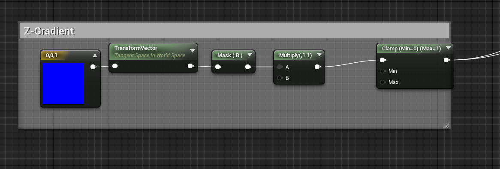
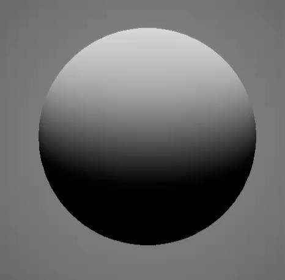
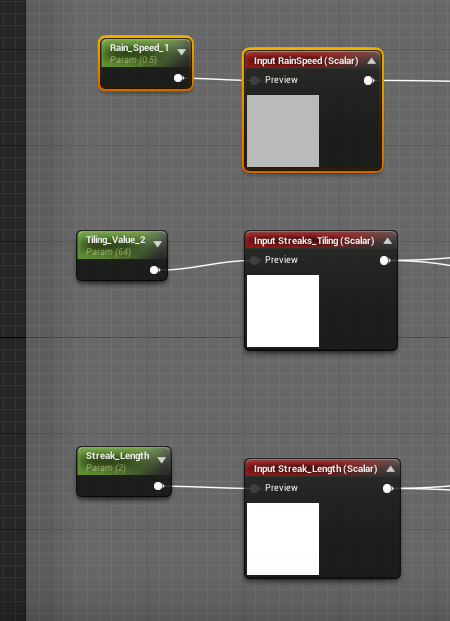
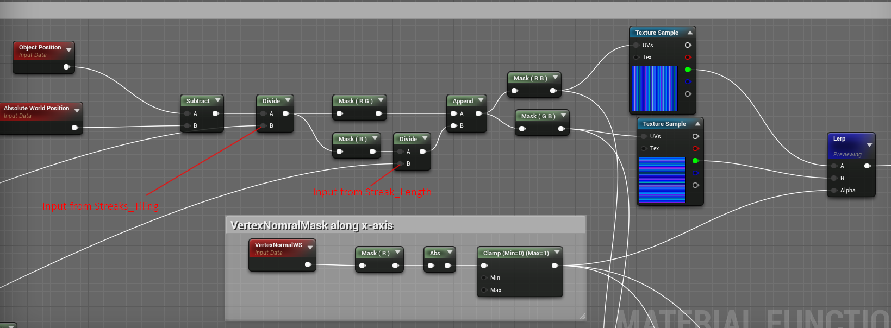
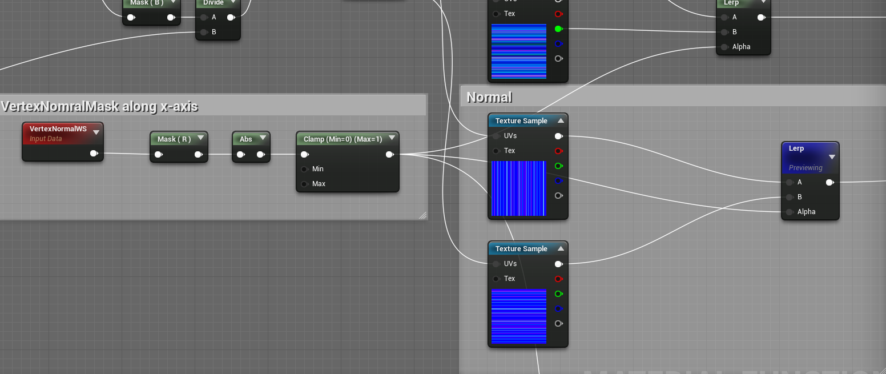
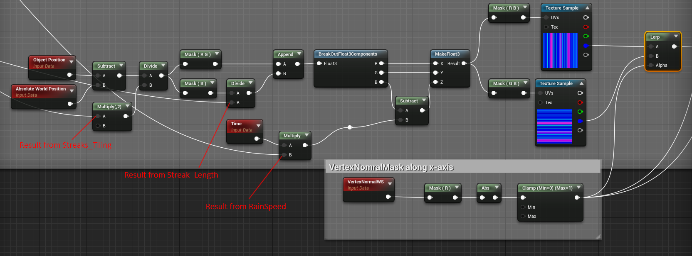
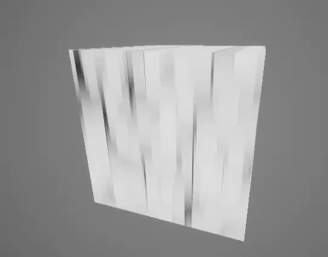
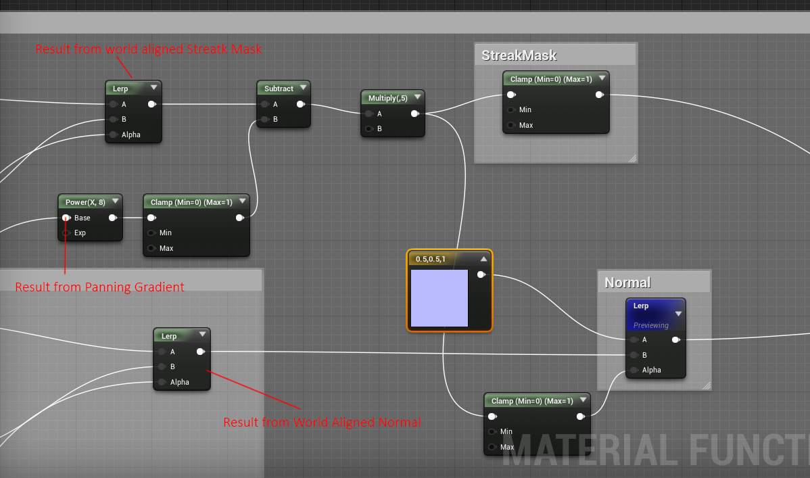
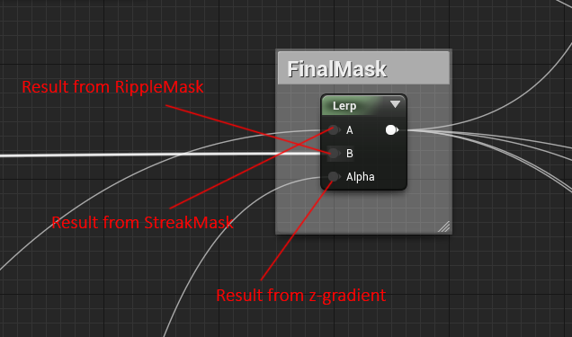
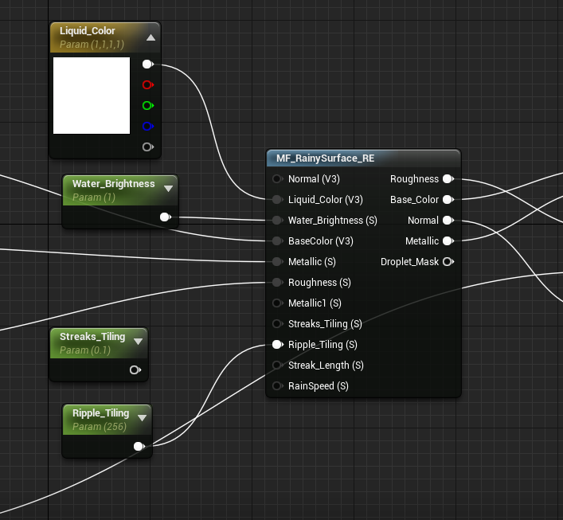

Rainy SurfaceShader in UE4 Part 2
源地址：https://deepspacebanana.github.io/deepspacebanana.github.io/

This is a continuation of the first part, so if you havn’t read that I recommend going through that first since this will continue where that left off, and you will need to be aware of that setup, so that you know how to combine both at the end..
Just as a side not, as I was writing this post, i actually came up with an even simpler and easier to use solution for this rain system, using just one Post-Process Material, I will cover that some other time
Slope Awareness
So making the Function “slope aware” is actually incredibly simple, all we are doing is using a Z-gradient to blend betweek the Ripples Effect and the Streaking Effect that we create in this post.


Below you can see simple way to get a z-gradient

The result looks like this

We use this result later to blend betweek the ripples and the water streaks
Texture Setup
So, if you remember the previous post, the texture setup we use is shown below, in this part we are going to make use of the Green and Blue Channels to make the water appear to drip.

And the Normal Map

Droplet Streaking Setup
For the streaking, all we are actually doing is setting the texture to be World Aligned along the xz and yz axis, and then panning the gradient texture in the blue channel to create some simple alpha eroision, that makes the drops appear to streak.
First we create two input parameters, Streaks_Tiling and Streak_Length. RainSpeed was created in the last part, but it will be used for the streaking as well

Next we set up the rain streaking texture to be world aligned along the xz and yz plane. We use the Green Channel which contains the streak pattern.

We use the same RB and GB outputs as the uv input for the normal map as well.

The result will look like this

Next we set up the world aligned panning setup for the gradient texture in the Blue Channel

The result has the texture mapped in world space and panning along the z-axis.

Now we take the result from the panning gradient texture, do some math operations to it and then subtract it from the original world aligned streak texture in the Green channel.
We also use the result from this to blend between a default normal color value and the World Aligned Normal Result

If you preview the result from the StreakMask and the Normal you will see the following results respectively


The panning gradient creates an alpha erosion effect, that creates the illusion of dripping water
Note:There is a better solution for the Dripping water, I will cover that in one of my future posts.
Combining with Ripple Effect
Now all that’s left to do is blend between this streaking effect and the ripple effect using the z-gradient we created earlier in the post
This is the part where you will need to refer to the previous blog post, as we are essentially just adding a lerp for all the function outputs from the previous blog post, you can read it here
Find the normal output taht was setup in the previous Post and add a linear interpolation between the ripple normal and the streak normal

Do the same for the mask as well

Note: The result from this output will now take the place of all hte places where the ripple mask was being used to blend, like Basecolor,Metallic etc

And that’s it now you ahve a material function that can be layered to any existing shader to make it look like the surface is being rained on, with parameters to control ripple size, rainspeed etc.

Here’s a small test Environment I put together to show how the shader looks in a scene. All the materials used in the scene have the RainySurfaceMaterial function layered on them.


关于本文
本文作者 Master Gong Sheng, 许可由 CC BY-NC 4.0.